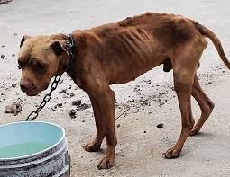

A menudo imaginamos el maltrato animal como actos de crueldad extrema en la calle, pero la realidad más dolorosa ocurre en el entorno que debería ser un refugio: el hogar. El maltrato doméstico no siempre se manifiesta con golpes; se esconde en la indiferencia, en el olvido de una cadena corta bajo el sol, en el plato de agua vacío y en la falta de una caricia.
El maltrato animal doméstico abarca acciones u omisiones que causan dolor, sufrimiento o daño, incluyendo negligencia (falta de alimento, refugio, atención médica), abuso físico, tortura y abandono. Está reconocido como delito en la mayoría de los estados, con penas que incluyen prisión y multas.

Un animal de compañía no es un objeto de decoración ni un sistema de seguridad desechable; es un ser sintiente que establece vínculos emocionales profundos con su familia humana. Cuando el hogar se convierte en un escenario de negligencia o agresión, el daño no es solo físico, sino psicológico.
Entender que la omisión de cuidados (falta de alimento, higiene o atención médica) es una forma de violencia tan grave como la agresión directa, es el primer paso para transformar nuestra cultura y garantizar que la lealtad de un animal sea correspondida con respeto y protección.